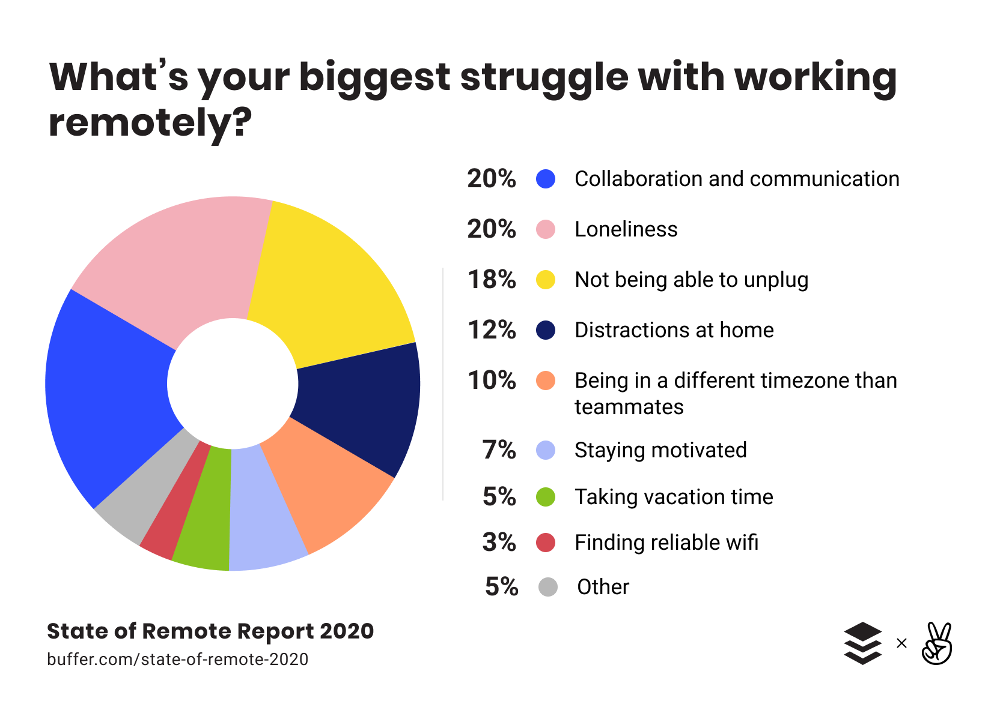
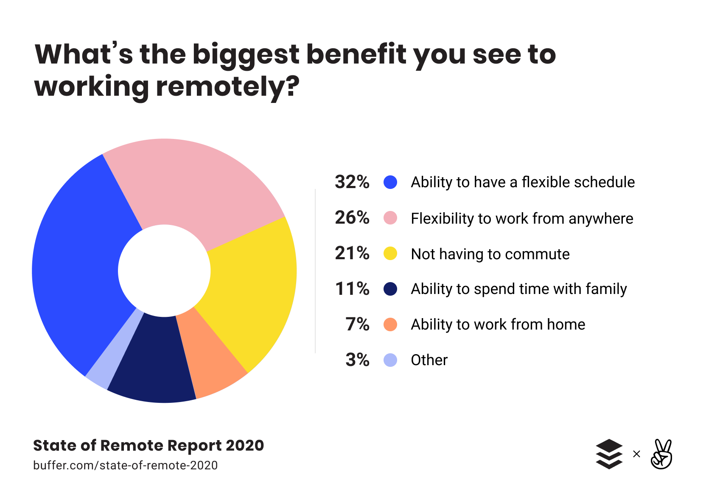

Covid has not only changed the way people work but also the places people work. In Britain, mid june 2020, 49% of people in employment did some work at home, which is an 8% increase from just one week prior[1]. This has affected the workforce in various ways. Some jobs can be worked remotely with slight adjustments, such jobs as software engineers and accountants. Gardening, joining amoung many other trade jobs however cannot be worked from home and must be worked on site[2]. Jobs that can be worked from home require technology such as cameras and microphones to join meetings on zoom and other meeting software. This large demand for such technology caused the sales of Logitech, a company which specialises in these items, sales to surge to two thirds when compared to last year[3]. This shows that an increase in home working creates a very large demand for these items. Remote working has positive and negative qualities which can make it appealing to some business owner, and not an option for others.

Negatives
One of the negitive effects of more people working from home is the increased difficulty in managers monitoring their employees[4].
This leads to increased errors and less efficiency as the managers can’t keep employees on track and correct errors that occur.
Another impact of working at home is a decrease in data security.
Usually a Company would have sensitive information only travel between computers within its building, however with staff working from home, this is not a possibility.
Therefore, data travels out with the secure network where is susceptible to being intersected by a hacker, which could lead to a data breach.
A final negative of remote working is that employees may be located all over the world and in different time zones. This can make communicating very difficult if a manager wants to set up a meeting but is unable to
find a time slot where all their employees are awake. This causes a lack of productivity and a possibility for things to go wrong if important information is not able to be given out[5].

Positives
Not all impacts of working at home are negative,
one positive impact of home working is improved employee retention. Since workers are staying at home and are not commuting to work,
the time that would be spent travelling can now be spent working, leading to an increase in productivity.
Another benefit of home working is a larger area to hire people. Remote working has nullified the need
for commuting to a workplace, this means technically, people who may not have applied to a job because of a long communte may now consider applying which leads to companies gaining a larger selection of applicants to
choose from when filling a position, possibly giving the business more experienced people to choose from[4].
A final benefit is a change to employees schedules. When employes are at the workplace they typically have to follow a tight schedule and can't shift their work hours around, however, while working at home they
don't have to abide by the same schedule and are able to change their hours far easier. This increases quality of life substantially and in turn creates greater productivity for the comapany[5].